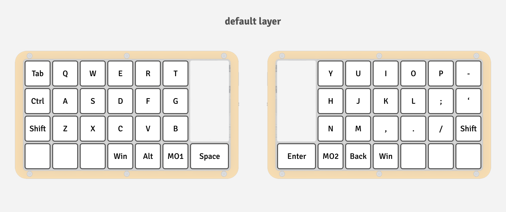
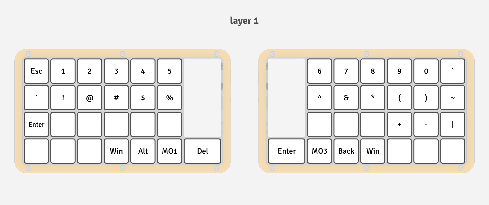
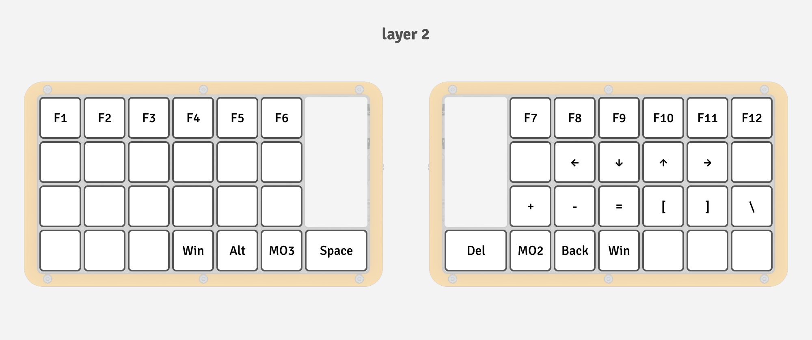
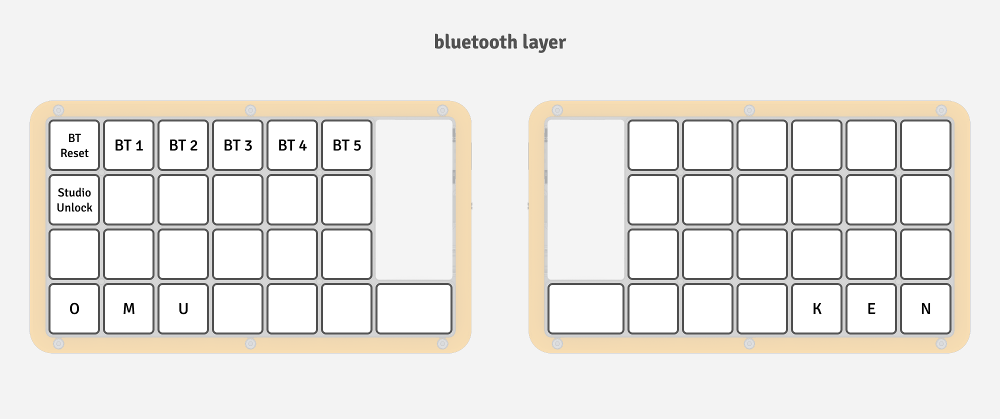
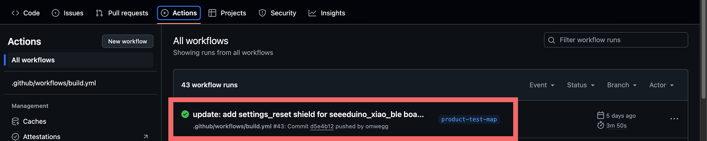
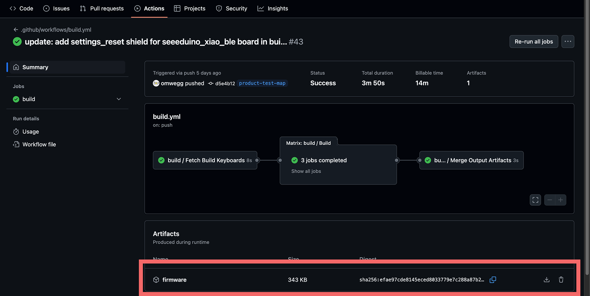
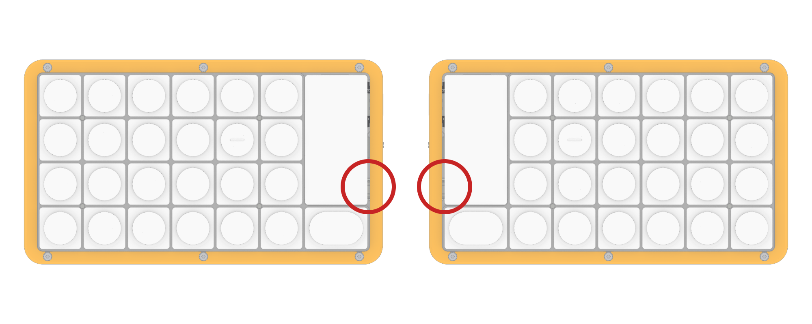
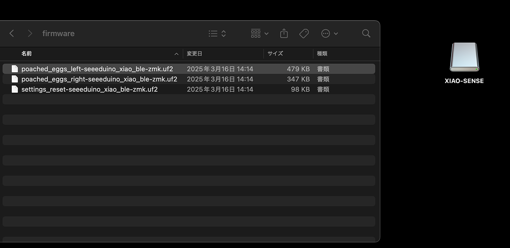
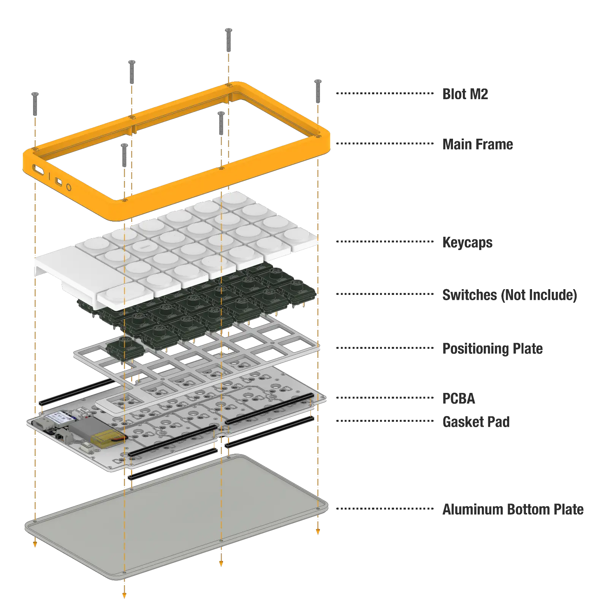

デフォルトキーマップについて
PoachedEggsではデフォルトで以下のようなキーマップを設定しています。
デフォルトレイヤー
-
特に何もしていない場合はここに書かれている文字が入力されます。
一般的なQWERTY配列を基本にしています。製作者の好みが大いに反映されているため、
必要であれば後述するZMKStudioを使ってカスタマイズしてください。
-
ここでMOと書かれているキーを押すことで、押している間はレイヤーを切り替えることができます。
-
例えばMO(1)と書かれたキーを押している間は、
他のキーを押すとレイヤー1に記されている文字を入力することができます。MO(2), MO(3)も同様です。

レイヤー1
-
数字や記号などを設置しています。
PoachedEggsはキーが縦に4行しかないため、数字を入力するためにはレイヤーを移動する必要があります。

レイヤー2

レイヤー3
-
Bluetooth接続に関連するキーが配置されています。
-
Unlockは後述するZMKStudioに接続するためのキーになります。

キーマップの変更
PoachedEggsのキーマップは2通りの方法で変更することができます。
ZMKStudioを使えば画面上で簡単にキーマップを変更することができます。
ただ、ZMKStudioは正式版が公開されて間もないため、まだまだ使いにくい部分も多いです。
もしGitHubの操作に抵抗がない場合は、GitHubActionsを使った.keymapファイルからのビルドも選択肢になります。
ZMKStudioを使う場合
.keymapファイルからカスタマイズする場合
以下のステップでカスタマイズした.keymapファイルでPoachedEggsのキーマップを書き換えることができます。
-
ご自身のアカウントでGitHubにログインし。PoachedEggsのconfigリポジトリをフォークします。
-
.keymapファイルを自分の好みに編集してください。(/config/boards/shields/poached_eggs/poached_eggs.keymap)
-
リポジトリが更新されると、GitHubActionsを使ったビルドが自動で行われます。
-
画像のようにActionsから最新のビルドを選択し、firmwareをダウンロードします。


-
ビルド結果をダウンロードしたら、poached-eggsに書き込みを行います。
まずは左手側デバイスからpoached-eggsを接続しましょう。USB-TypeCケーブルでPCに接続してください。
（USBハブなどを使って間接的にPCに接続すると認識されない場合があります。）
-
接続したらリセットスイッチを2回押してください。以下の画像で赤丸で囲った部分にスイッチがあります。
定規などの細長いもので2回押します。

-
poached-eggsが接続されると、XIAO-SENSEというドライブが認識されます。
ダウンロードしたファイルのうちpoached_eggs_left-seeeduino_xiao_ble-zmk.uf2
という名前のファイルをドライブにコピーしてください。
書き込む際にエラーが表示されることがありますが、たいていの場合は問題なく書き込みが完了しています。
詳しくはこちら。

-
同様にして右手側デバイスにpoached_eggs_right-seeeduino_xiao_ble-zmk.uf2をコピーしてください。
-
以上でキーマップの変更は完了です！
フレームの取り替え方
以下の図のように、フレームとアルミプレートを6本のネジで固定しています。
6本のネジを全て外すと全体を分解することができます。
再度組み立てるときは、ボトムプレートとフレームのネジ穴がうまく合うように全体を重ねて、再度ネジで固定してください。
フレームの穴に基盤の端子部分をはめる必要があるため注意してください。
